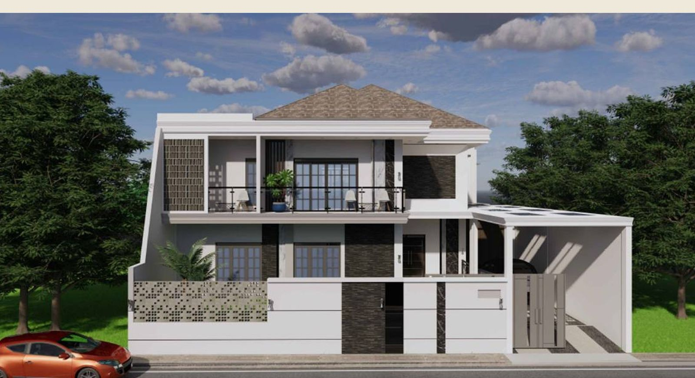
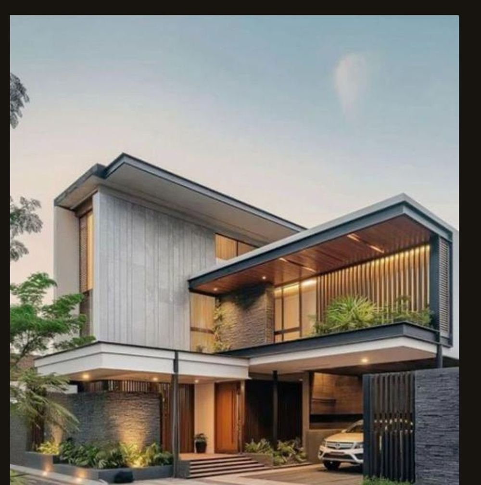

'/%3E%3C/svg%3E)
Interior & Spatial Design
Layouts, lighting scenarios, and material stories shaped around how you actually live.
Layouts, lighting scenarios, and material stories shaped around how you actually live.

Strong lines, stone and timber cladding, and facades that age with dignity.

From permit drawings to handover — one team, one contract, one standard.

Careful surgery for older houses — new light, flow, and services without losing soul.

Budget clarity before commitment — try the online simulation or talk to us directly.
An architecture and interior studio shaping calm, precise spaces — from the first sketch to the final brass fitting.
We pair architectural rigour with warm materiality — concrete discipline softened by timber, brass, and natural light.
Our current featured residence — stone facade, high voids, marble and gold — is one scroll away.
Featured Project
Padang, West Sumatera — 2024

Located in Padang, this design features an architectural approach that prioritizes modern luxury through the harmonization of premium materials and bold geometric play. From a contemporary exterior facade dominated by strong lines to a grand living room interior with a high void and marble accents and gold elements that give a prestigious impression, this aesthetic is combined with flexible public functionality through the use of vertical wooden panels and warm indirect lighting, creating an elegant spatial transition that still feels comfortable and organic.

Contact
Tell us about your site, your programme, and the atmosphere you want to live in — we typically reply within one business day.